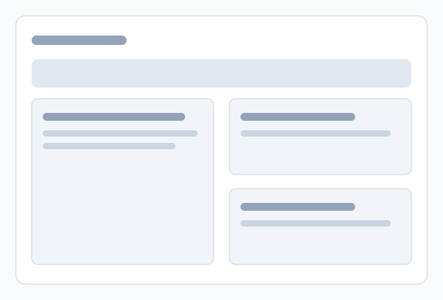

Clear client and case records
Store key details in a format that is easy to maintain and review.
Wolds Record
Sign InBuilt for practical professionals
Keep client records, sessions, and cases in one clear workflow. Wolds Record helps you stay organised and save time without introducing unnecessary complexity.
Secure subscription billing is handled through Stripe.

Wolds Record gives you one place to manage case details, session notes, history, and follow-up admin. The workflow is intentionally straightforward so you can work confidently and stay on top of daily tasks.
Store key details in a format that is easy to maintain and review.
Capture each session and quickly reference past entries when context matters.
Use structured workflows that support quality, consistency, and accountability.
Pick the right tier for your practice with straightforward account management.
Secure, web-based access across devices so you can work where you need to.
Use practical guides and help articles to get answers quickly.
Wolds Record offers subscription plans for solo practitioners and small teams. Billing is handled securely through Stripe.
Beta pricing placeholders: Starter (£XX/month), Professional (£XX/month), Team (£XX/month).
Wolds Record is currently in beta, with staged onboarding for early users.
It is built for solo practitioners and small businesses that need clear, professional case and session records.
Once your beta access is active, you can sign in at the app URL. Placeholder: https://placeholder-app.example.
Yes. Subscription billing is handled securely through Stripe.
Guidance is available in the knowledge base. Placeholder: https://placeholder-kb.example.